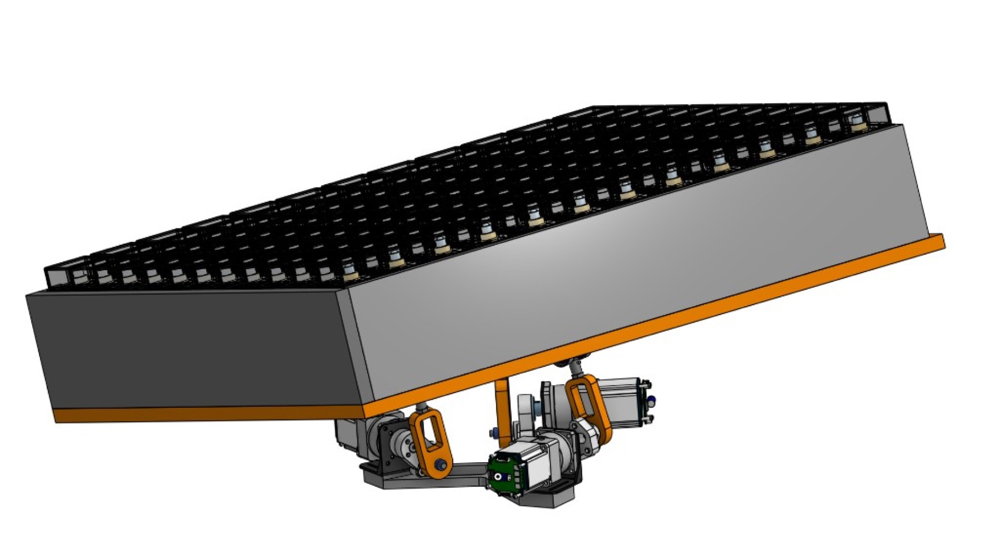
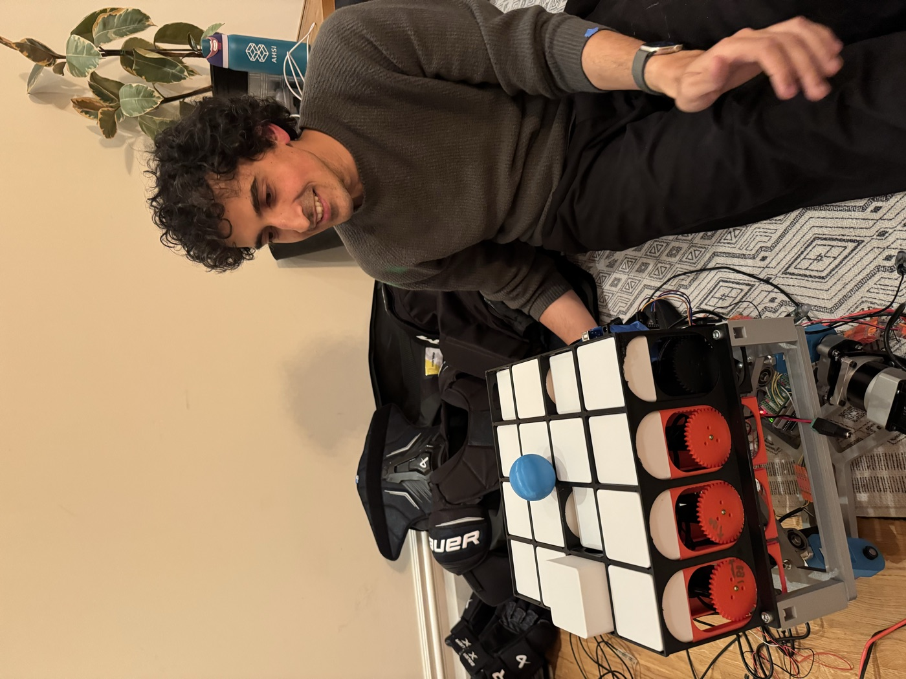
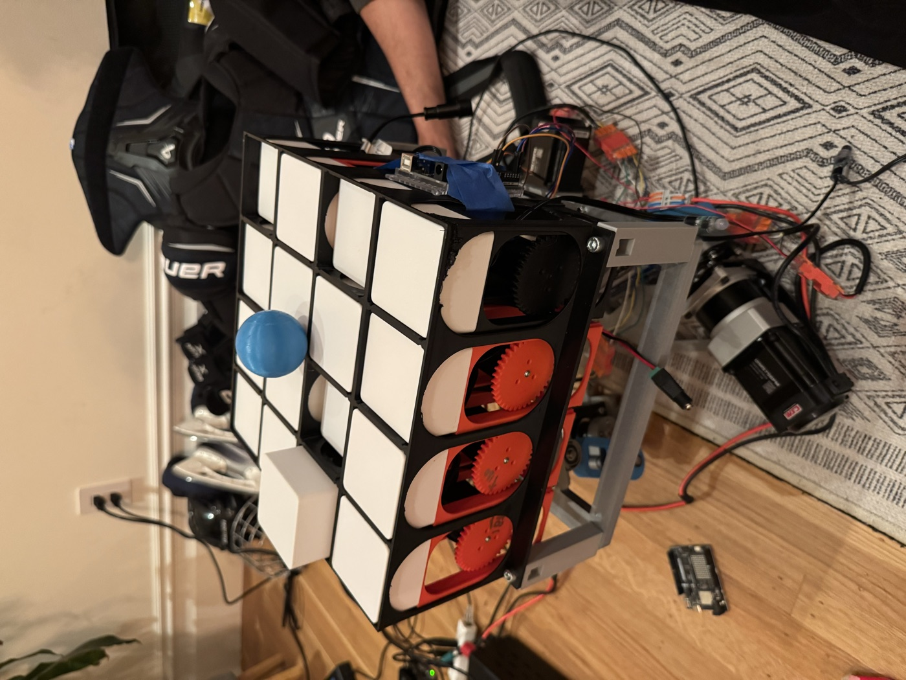
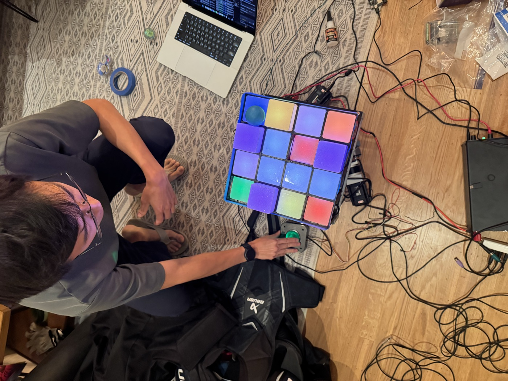

Module concept
Reconfigurable maze cells
Each module is being designed as a physical state machine: floor, wall, trap, or hole.
Open Sauce proposal
TiltyTable is a physical arcade machine: a player steers a rolling ball with an arcade roller ball while a 3-axis Stewart platform tilts the maze, an Azure Kinect watches the game state, and modular cells change the maze underneath the player.

Prototype evidence
The current work combines a moving platform prototype, Kinect-based sensing, module CAD, and early electronics tests. The next step is integration into a public-demo machine that feels like a mechanical video game.
Each module is being designed as a physical state machine: floor, wall, trap, or hole.
Three motorized actuators drive the maze plane through roll, pitch, and heave commands.
The Kinect gives the software a live depth view of the board and the moving game pieces.
Early cell prototypes, wiring, servos, and tracking experiments are already in motion.
System idea
An arcade roller ball becomes the main control surface, mapping hand motion to roll and pitch commands.
An Arduino-driven Stewart platform translates those commands into synchronized motor motion.
Azure Kinect depth and color streams track ball position, board state, and trigger zones.
Software can reconfigure modules, trigger traps, light feedback, and make the maze fight back.
Why it belongs at a maker show
The audience sees a real platform tilting, a real ball rolling, and a real maze changing. The control loop is visible, mechanical, and a little chaotic in the best way.
Under the hood, it is a robotics demo: Stewart-platform kinematics, computer vision, depth sensing, embedded motor control, and modular mechanism design all wrapped in a game that anyone can understand instantly.
Build artifacts



The proposal
The goal is to bring TiltyTable from working subsystems to a cohesive public demo: a reconfigurable labyrinth that spectators can play, watch, and immediately understand.
Technical stack
Python server and browser UI for color/depth feeds, depth boxes, ball calibration, and servo targets.
OpenCV HSV detection, depth lookup, and Kalman tracking for a colored ball in camera coordinates.
Raw Linux input capture maps USB mouse/trackball deltas into Stewart platform roll and pitch velocity.
Arduino firmware converts pose commands into pulse/direction outputs for a three-axis Stewart controller.